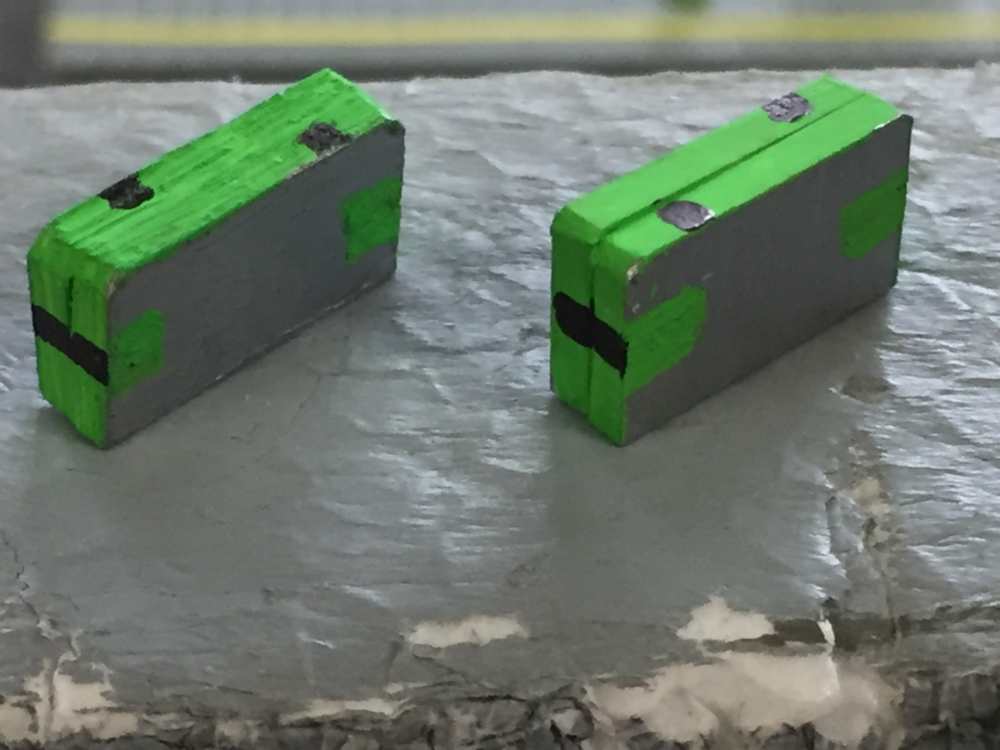
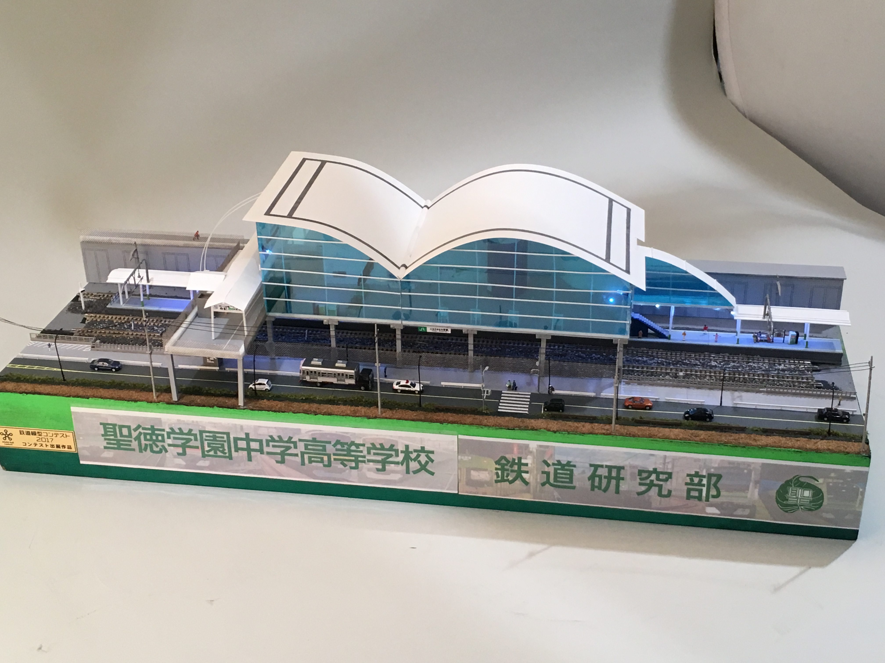
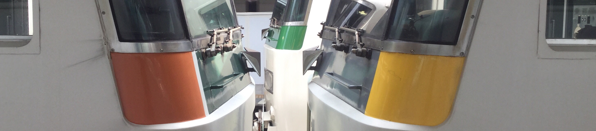

ホーム
このサイトについて
アクセス
部活概要
リンク集
お問い合わせ


このサイトについて
こちらのサイトを見る前にこちらを必ずご覧ください。
詳しくはこちら
鉄研イベント

鉄研でのイベントを紹介しています。
詳しくはこちら
全国高等学校鉄道模型コンテスト
2017年度は終了しました。
詳しくはこちら
INFORMATION
2017-10-12
しばらく活動がないため更新を停止します
2017-08-31
このページ
の正式運用を9月13日（水）に開始しました。そのため、
旧サイト
を運用停止致しました。
2017-08-31
このページ
の仮運用を9月４日（月）より開始します。
2017-08-29
イベントページ
を移行しました。
2017-08-21
このサイト
のデザインを大幅に変更しました。
2017-08-21
元のサイト
から
このサイト
への移行作業を開始しました。
準備中
---
---
Keitanの開発者ページ(要ログイン)
顧問について
このページの投票する
関連サイト
Keitanが遊びで作ったサイト
準備中
ndg26gsduj1ysjasqjak
関連サイト
Keitanが遊びで作ったサイト
このサイトについて
アクセス
部活概要
リンク集
お問い合わせ
グループサイト
ページのトップへ戻る